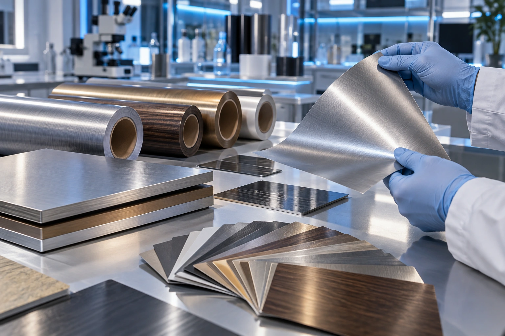

Soft-feel PP design films
Surface coatings create a tactile finish and visual depth. The source materials describe embossing, printing and improved forming behaviour.
Different surface constructions serve different applications. Select the system before specifying performance.

Surface coatings create a tactile finish and visual depth. The source materials describe embossing, printing and improved forming behaviour.
Wood, stone, solid, fabric and matte design families are shown in the brochure. Exterior grades are a separate selection.
The brochure shows a layered decorative construction containing aluminium. Fire performance must be assessed from the exact grade and complete tested assembly.

Functional coatings can retain a textile appearance while modifying the surface finish. The intended cleaning and wear conditions guide selection.
| System | Described role | Project questions |
|---|---|---|
| TLF / lower-temperature variants | Thermal lamination interface for metal or other suitable substrates | Bonding temperature, substrate, pressure and process window |
| Colour thermal lamination | Coloured finish for appliance, architectural and industrial metal panels | Colour, forming, corrosion system and line compatibility |
| Thermal protective films | Surface protection for steel-panel manufacturing and handling | Removal behaviour, exposure conditions and residue evaluation |
| High-bond PP interface films | Bonding interface between a decorative film and a substrate | Adhesive selection, peel strength and ageing conditions |
| PET / OPP process films | Cleaning, alignment and preliminary coating operations in optical manufacturing | Cleanliness, dimensional control and process requirements |
Conceptual functional diagram. Layer order, thickness and composition vary by product. Request the construction drawing for the selected grade.
The brochures reference weathering, chemical resistance, emissions, antibacterial and fire-related testing. These references are not represented here as certification of every Neipclova product or every installation.
Request the original report, tested sample, method, date and conditions for the proposed grade. Confirm thickness, roll dimensions, availability, warranty scope and application limitations before ordering.

The coating influences touch and appearance. Confirm abrasion, gloss change and cleaner compatibility; tactile softness does not automatically establish durability.

Exterior exposure changes the specification. Evaluate colour stability, edge adhesion and the complete construction under the stated conditions.

This explains layer functions only. Actual layer order, thickness and fire performance must come from the selected grade documentation.
Surface texture affects cleaning and visual depth. Assess the actual coating, fabric construction and intended use rather than assuming a woven look behaves like another film.
Tell us the space, the substrate and the finish you have in mind. We will discuss material selection, samples and quotation requirements.
Contact NeipclovaReturn to Neipclova ↗